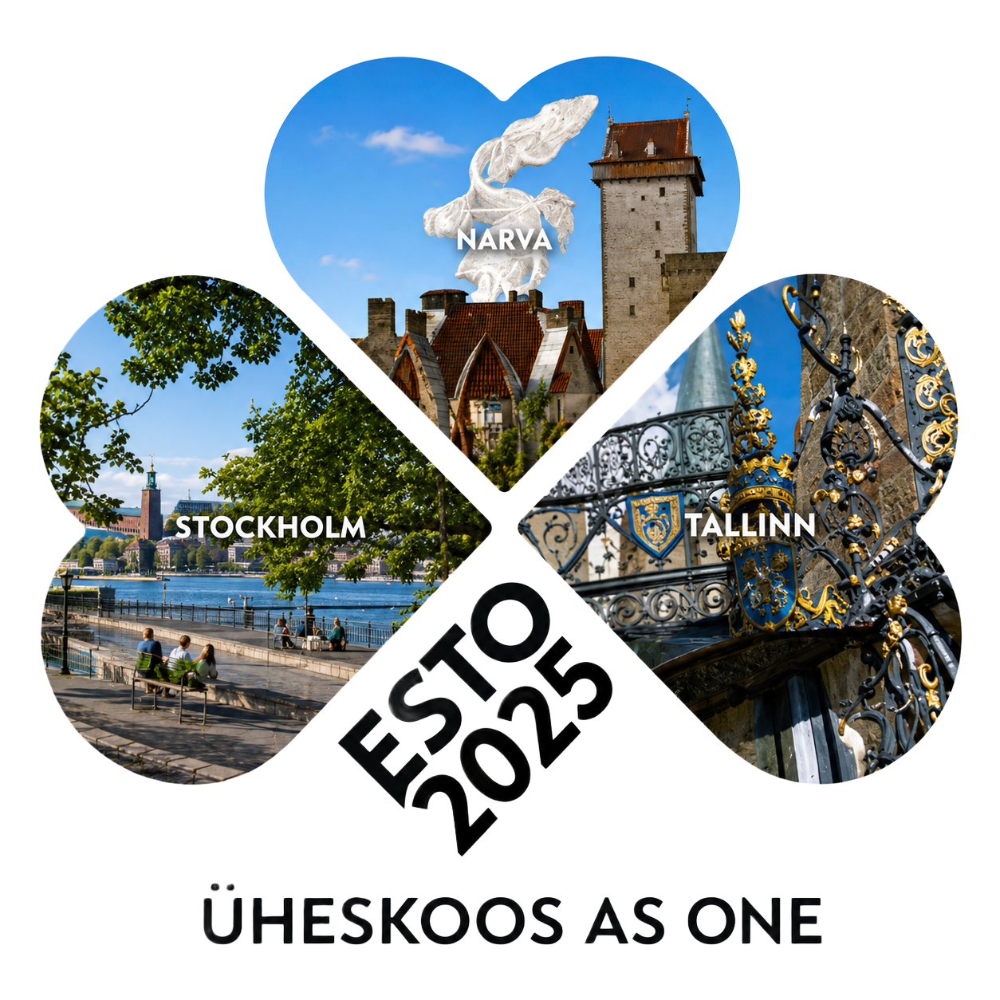

Põhiartikkel
ESTO 2025 - ülemaailmsed eesti päevad "Üheskoos"
ESTO on rohkem kui festival - see on eesti rahva lugu ning kultuurilise järjepidevuse ja koostöö platvorm üle maailma.

ESTO on rohkem kui festival - see on eesti rahva lugu. See on lugu kodumaalt põgenema sunnitud eestlaste võitlusest jääda võõrsil alles rahvusgrupina, säilitada oma keel, kultuur ja identiteet ning toetada Eesti iseseisvumise taastamist.
Eesti laulu- ja tantsupidude traditsiooni hakati kohe pärast pagulusse jõudmist hoidma 1944. aastal Saksamaal, Rootsis, USAs, Kanadas, Inglismaal ja mujal. Loodi Eesti Majad, skaudilaagrid, laste suvekodud - eesti kultuurisaared võõrsil. See polnud aga piisav. Tuli teha midagi suuremat, mis ühendaks eestlasi üle maailma. Ja nii sündis 1972. aastal Torontos esimene Ülemaailmne Eesti Päevade festival - ESTO.
Nüüd, 2025. aastal, toimub ESTO Stockholmis, Narvas, Narva-Jõesuus ja Tallinnas.
ESTO Stockholmi sündmuste keskmes on 26. juunil Skansenis toimuv avakontsert "Ajaaknad", mille lavastuslik visioon viib vaatajad rännakule läbi Eesti ajaloo, kultuuri ja identiteedi. Kontsert, mis toob lavale ligi 400 koorilauljat, 200 rahvatantsijat ning Idla võimlejad Eestist ja Rootsist, on austusavaldus paguluses säilinud ja arenenud laulu- ja tantsupeo traditsioonile.
ESTO programm Stockholmis algab 25. juunil jalutuskäiguga Metsakalmistul, kus mälestatakse Rootsi eestlaskonna silmapaistvamaid ühiskonna- ja kultuuritegelasi. Õhtu kulminatsiooniks on Katarina kirikus ettekandele tulev Cyrillus Kreegi "Reekviem".
Oluliseks kokkusaamiskohaks on Stockholmi Eesti Maja. Seal saab tutvuda rootsieestlaste kunstipärandiga ja mitmete näitustega. Õhtuti kutsub ESTO salakõrts - kohtumispaik vabas õhkkonnas, kus kõlab muusika ja põimuvad lood.
27. juunil keskendub ESTO 2025 Stockholmis Läänemere tähendusele ning piirkonna julgeoleku olukorrale. Päev algab aruteluga teemal "Põgenikepaadid 1944-45". Mõttekojas "Läänemeri - elukeskkond ja julgeolek" käsitletakse kasvavaid riske: näiteks merenõhjas [unleserlich] julgeolekuruum, mille kaitsmine on muutunud kogu regiooni julgeolekupoliitika keskseks küsimuseks.
Kolmanda päeva õhtul reisitakse üheskoos üle Läänemere laevaga M/S Baltic Queen, et suunduda edasi Narva ESTO sündmustele ning seejärel üldlaulu- ja tantsupeole. Laeval on ESTO eriprogramm.
Narva valimine üheks ESTO 2025 linnaks ei ole juhuslik. Narva on selleks sündmuseks ideaalne koht mitmel põhjusel: ajalooline ja geograafiline tähendus, seos Rootsiga ning piirkondliku arengu ja identiteedi fookus.
Narvas toimuv ESTO toob esile linna mitmekülgse ajaloo ja sümboliseerib kultuuridevahelist dialoogi. See on koht, kus eestlased üle maailma saavad tähistada oma juuri ja samas jagada oma lugu teiste rahvastega.
28. juunil toimub Tartu Ülikooli Narva Kolledžis noortekongress "Mitmekeelsus avab uksed", mille avab Eesti president Alar Karis. 29. juuni hommikul toimub Narva Aleksandri kirikus kontsert-jumalateenistus, kus tuleb taas esitusele C. Kreegi "Reekviem". Pärastlõunal jõuab Narva laulu- ja tantsupeo tuli, millest süüdatakse põlema ka ESTO laulupeo tuli Narva kindluse [unleserlich].
[Unleserliche bzw. teilweise verdeckte Stelle fototeksti ja veergude vahel.]
30. juunil avaneb ESTO osalejatel võimalus avastada Ida-Virumaa potentsiaali tulevikku vaatavas võtmes. Tulevikufoorum viib osalejad Narva-Jõesuusse, Narva ja Sillamäele ning ühendab ettevõtluse, julgeoleku, hariduse, investeeringud ja kultuuri.
Päeva teises pooles külastatakse kuut võtmekohta Narvas: Narva Eesti Gümnaasium, Tartu Ülikooli Narva kolledž, Narva Kunstiresidentuur NART, Sisekaitseakadeemia, Kreenholm, Magnetitehas.
Tallinnas, laulu- ja tantsupeo eel, toimub 1. juulil suur võrgustike kohtumise päev Kultuurikatlas ja õhtut sisustavad Kanada eestlased. 2. juulil on ÜEKNi korraldatav rahvuskongress ning ESTO galaõhtu Lennusadamas. 3. juulil mälestatakse kommunismiohvreid Maarjamäe memoriaalil. 4. juulil kutsuvad USA eestlased salakõrtsi Telliskivi linnakusse.
ESTO 2025 programm on väga rikkalik ning ootame kõiki ESTO-le.
Vaata: www.estofestival.com
Facebook: https://www.facebook.com/esto2025
Piletid: https://www.piletitasku.ee